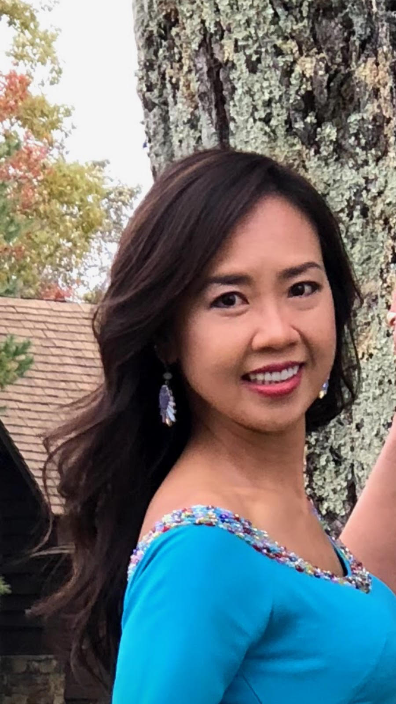

Hi! My name is Thuy Nguyen (most of my peers call me Tweety, as in Tweety bird) and I am the owner of my beauty business Sophisticuts. I offer various beauty services for all genders, ages, hair types, and skin types. I mainly specialize in hair services but also offer predicure, manicure, wax, facial, and massage services. Check out a list of my offered services here! Beauty services have always been a passion of mine and I believe that everybody deserves the best beauty services, which is what I strive to provide to my customers. I also love getting to know my customers personallly and have even formed personal friendships with many of my customers. About 20 years ago, in 2000, I decided to open up my own beauty salon in Woodbridge, VA and named it Sophisticuts. I owned the salon for about 10 years, and now I rent booths in other beauty salons in order to continue offering Sophoisticuts services.
Currently, I am renting a booth at Paris Nail & Day Spa located at 9726 Liberia Ave, Manassas, VA 20110. The salon is located in The Shops at Signal Hill off of Liberia Ave and is located next to ALDI and in the same shopping strip as Plato's Closet, Qdoba, and Dollar Tree. If you are taking VA-294 West/ Prince Willaim Parkway, drive until the intersection with Liberia Ave, and take a right at the light. About 0.5 miles down, you will see The Shops at Signal Hill on the left. We hope to see you soon!
Choosing the right products to use is just as important as providing phenomenal service. Here are some of my favorite brands I use for hair and nails and that I usually reccomend to clients.